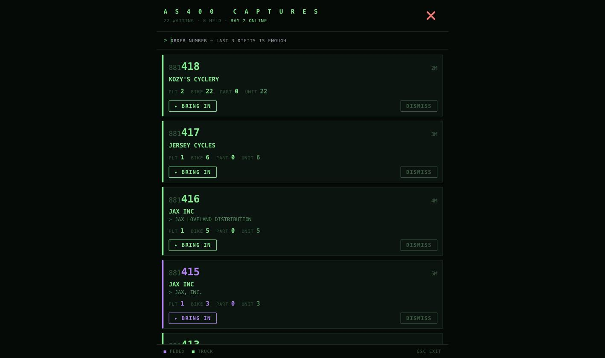
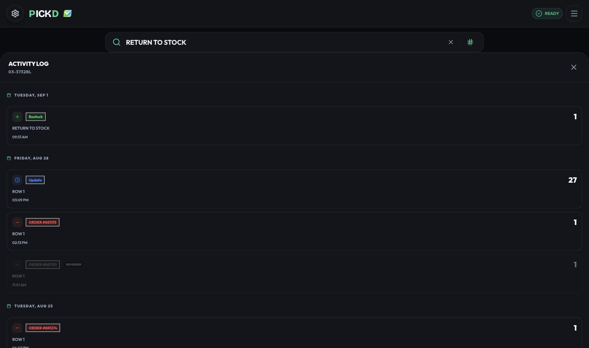
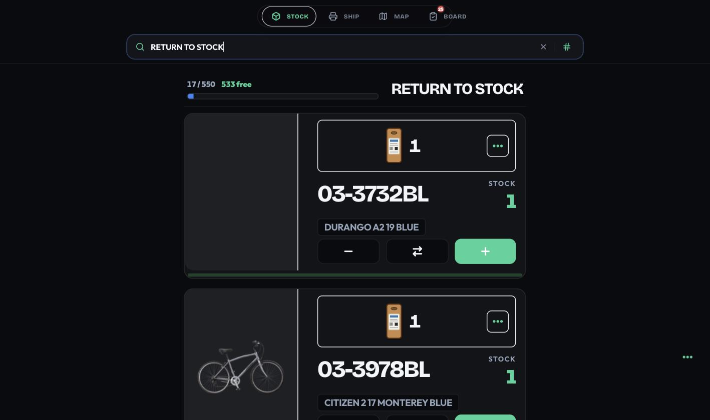
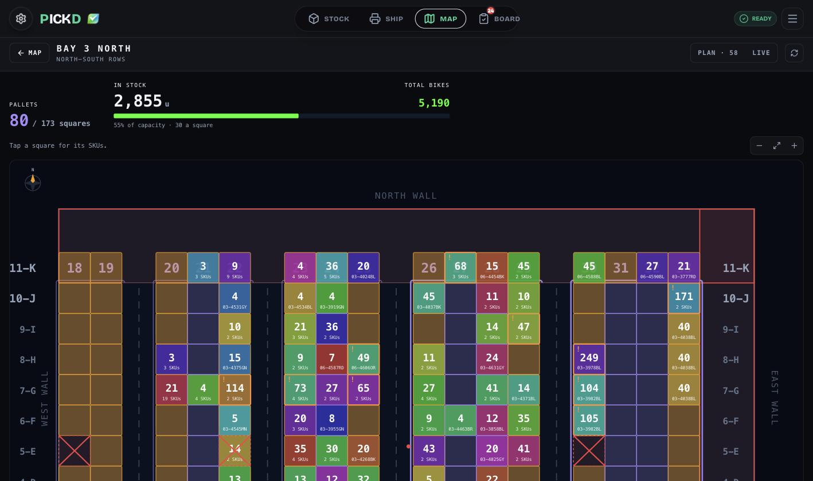

Tuesday, September 9, 2026 · everything since August 28 · for everyone on the Ludlow floor
The short version
1. The orders the scanner captures from the AS400 show up in PickD. Nobody walks to Bay 2 to send them.
2. A cancelled order finally gives its units back — and a completed one gives them back to RETURN TO STOCK, not to the shelf.
3. What sits in RETURN TO STOCK is picked before any shelf.
What you will notice
1. Orders from the AS400 show up in PickD. Nobody walks to Bay 2.
To see what the scanner had captured, somebody went to the MacBook in Bay 2 and pressed Send there, one order at a time. Whatever nobody pressed just stayed there.
Now the Live Board has a From AS400 button with a count, and every capture is listed with its customer, its pallets, bikes and parts. One tap brings it in, and it lands on the board a few seconds later.
1
1The new button, next to the pills that were already there. The number is how many orders are waiting in the AS400 — here, 22.

12345
1How many are waiting, how many are held back, and whether Bay 2 is answering. If it says the scanner is not there, nothing can be brought in and the screen says so.
2The same search as the scanner in Bay 2 — the last three digits are enough. It also finds the older ones that already dropped off the list.
3What the order is, before anybody touches it: pallets, bikes, parts, units. The same count the board makes.
4BRING IN. The order appears on the Live Board a few seconds later, in its lane.
5Purple means FedEx, green means truck — the board's own colours. Nothing to read: 881415 is a FedEx order.
Live on September 9. DISMISS takes an order off the list — eBay orders and the like never get picked. Nothing is lost: searching its number brings it back.
2. A cancelled order finally gives its units back.
It never did. There are zero restore records in the entire database, and order 881310 gave back 0 of its 19 units when it was cancelled.
Fixed — and where the units go changed with it. An order cancelled after it was completed lands in RETURN TO STOCK, not back on its shelf. Those bikes are already off the shelf and on a pallet by the door; putting them back in ROW 8 claims stock that is not there.

12
1The unit comes back — into RETURN TO STOCK, where it physically is.
2The pick that order 881310 made on August 28, greyed out and marked REVERSED. Every line the order really took is undone one by one, and marked, so running it twice cannot double anything.
One bike, 03-3732BL, read from its own history in PickD.
3. What sits in RETURN TO STOCK gets picked before any shelf.
Those loose units owe somebody a trip. The next order that needs the SKU is that trip. Before, the picker was sent to a full shelf instead and the pile by the door only grew.

1
1Type RETURN TO STOCK in the search and it is a place like any other: 17 units, listed one by one, and every order that needs one of them will be sent here first.
4. The warehouse map is a screen in the app — measured, with the real stock in it.
The plans used to be drawings in a folder. To know what was in ROW 30 · H you asked somebody, or you walked over. Now every square carries its units and its SKU, drawn from the building's real measurements. Tap a SKU and every square holding it lights up.
5. PLAN and LIVE: move a pallet on the drawing, and it becomes real.
Rearranging a zone meant moving the bikes first and updating PickD afterwards — or never. Now you pick a square's pallet up, drop it where it goes, and PLAN COMPLETED writes it. Two buttons on the screen and nothing else.

123
1The zone counted: 80 pallets in 173 squares, 2,855 units in stock, 55 % of capacity. Measured from the building, not estimated.
2One square — its units and its SKU. Tap it and it lists what is in it; an ! is a square carrying more than 45.
3The only two buttons: PLAN (58 moves drawn and waiting) and LIVE. Everything else is just looking.
6. Which box to measure first — and the scale on the same trip.
The export said 154 boxes FedEx could not rate. What it could not say was which one mattered: a bike ordered ninety times is mis-rated every week, one ordered once is a walk with a tape measure for nothing.
The list is now ordered by how often the bike was actually ordered, it shows the row with the biggest pile of it, and the three sides and the weight are entered on the card itself.
1What is left: 94 boxes FedEx cannot rate. It was 154 eight days ago.
2Why this one is first: 15 orders in the last twelve months. The list is in that order, so it reads the same as the number on the card.
3Where to go — the row with the biggest pile of it — and how many are there.
4The three sides in any order, and the scale on the same card. The KG chip switches the whole screen and is remembered, so nobody picks it 94 times.
A card that is saved stays where it is, in green, so you can see the numbers went in.
7. The scanner digs itself out, and stops sleeping through the day.
On September 8 a VOID order left the terminal on the screen where no key works. The scanner sat dead for 36 minutes, repeating one line nobody was reading, until a person opened a new session by hand. It now opens one itself.
And it used to sleep twenty minutes between checks. It now checks every five, and spends the rest of that time reading the bike catalogue off the AS400.
Mentioned only, so you know it happened
A blank page is not an empty order. The scanner could read a real order as empty and skip its number for good — on order 880996 that would have silently thrown away $3,965.50.
Every ROW letter is one square now instead of two — 600 positions relabelled across Bay 2 and Bay 3 North.
A square's hard cap is 45 units; over it, PLAN spreads the pallet on its own.
What has no square goes to MAS, the south hall floor, in front of its own block.
The AS400 sync report counts a storage block as one location, heads each section with its units in stock, and no longer prints the notes PickD wrote to itself.
An empty Ship Via reads as empty instead of borrowing the column next to it.
MAP is in the navigation bar on desktop.
Coming up
Comparing our catalogue against the AS400. The AS400 holds the full name, a weight and its own stock for every bike, and PickD had never read any of it. The scanner now looks a bike up in the gaps between orders. Nothing to show yet — the first numbers arrive as it works through the list.
PickD · September 9, 2026 · Questions: Rafael · Menu → What's new to print this page